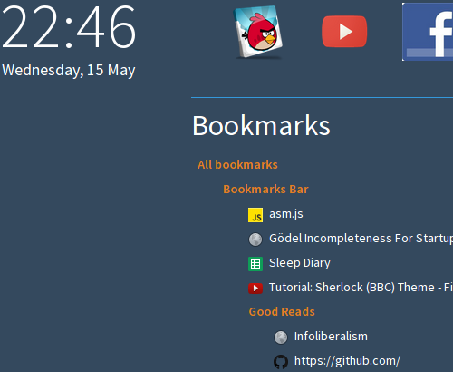

Chrome extension to replace the default new-tab page with a more productivity oriented system.
Version 1.1 released! Supports favicons aside bookmarks for a more awesome experience! Download now!
Your start page should try to point you towards starting your day better in a more productive manner. Sane-start-page does just that. It gives you clean and easy access to one or many of your bookmark folders along with your apps.

There are some more features that I will probably add in the near future. One of them is the ability to modify the bookmarks from within the new tab page interface itself and another is a small todo list.
Sane start page is not available on the chrome webstore because google doesn't accept payments from debit cards yet. I am offering the extension as a packaged file here.